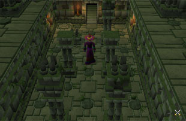
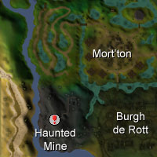
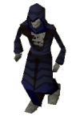

")
Tarn's Lair (Members)
Warning | Introduction | Location | Features | Personalities
Quests | Tarn's Minions | Miscellaneous
Quests | Tarn's Minions | Miscellaneous
Warning
Tarn's Lair is a deadly place filled with all manner of traps and his hundreds of undead minions. This is a very dangerous dungeon, so you should only take equipment that you are willing to lose.
You must have completed Haunted Mine to access Tarn's Lair.
Introduction

Location

You can find the new entrance on the first level down in the Haunted Mine, which is in south-west Morytania.
Features
The Lair of Tarn Razorlor is such a convoluted mess of passages, chambers, vaults and levels that no one has ever managed to map it, nor is anyone likely to. It is doubtful if even Tarn Razorlor himself has explored each chamber fully, and his minions only find their way there through their mindless shambling.
The Lair itself is filled with traps of several varieties which the enlightened adventurer would do well to learn to recognise.

|
Floor spikes
Floor spikes can be identified by watching for marks on the stone slabs that betray the slots through which vicious spikes can be thrust upwards. An adventurer with some experience of Thieving should be able to disable most floor spikes. |

|
Wall spikes
Wall spikes are more difficult to spot, as they spring from gaps between the stones in the wall. In larger chambers they should not be a problem, as adventurers can more easily avoid the walls. Like the floor spikes, they can be disarmed. |

|
Pit traps
Pit traps are a nasty device used to not only injure but to disorient its victims. Anyone who stumbles into these will suddenly find themselves two levels below and with aching shins from the impact. They are relatively simple to identify, though, courtesy of the obvious split in the flagstones. |

|
Pushing wall traps
Certain parts of the Lair feature solid blocks of stone that slide out to knock intruders from ledges as they pass. They cannot be disabled, but can be avoided fairly easily. |

|
Log traps
Log traps are mercifully rare in Tarn's Lair; they not only make some of the most challenging parts of the labyrinth difficult and dangerous, they also knock adventurers from atop pillars, sending them crashing to the floor below. They can be difficult to disarm, as the disabling catches may not be immediately obvious. |
Because of the number of zombies and skeletons in Tarn's Lair, it is likely that most adventurers will accrue a fairly sizeable stash of equipment from the (finally) slain bodies of Tarn's slaves. For this reason, the Bank of RuneScape has sent their boldest (or most foolhardy) banker into the Lair to collect items. Odovacar can be found wandering in a chamber of the Lair, with a massive pack ready to provide all the services a bank would normally provide - although he will charge 100 coins to bank up to a full inventory of items.
Personalities
Tarn Razorlor

The merciless sorcerer himself
From his private chambers within the buried temple that he calls his Lair, Tarn plots the rise of his undead legions and his ascendency over Treus Dayth. Those who come far enough and defeat Tarn, may find his research to be of some use in fighting the undead.
Tarn Razorlor can be found in his chamber deep within the Lair.
Quests
There are no quests to start in Tarn's Lair.
Tarn's Minions
![[image: animated spade]](../../img/main/kbase/npc/area_guides/animated_spade.gif "animated spade") The magic that animates the skeletons and zombies in Tarn's Lair so saturates the ruins of the temple that even the tools of fallen adventurers come to life. Of course, once brought to life even a humble spade can become an instrument of death.
|
![[image: possessed pickaxe]](../../img/main/kbase/npc/area_guides/possessed_pickaxe.gif "possessed pickaxe") Pickaxes are not generally known for being powerful implements of destruction (unless you happen to be a vein of ore), but those in Tarn Razorlor's Lair are imbued with a fiendish life. Crushing and Magic attacks are fairly good against them.
|
![[image: animated armour]](../../img/main/kbase/npc/area_guides/steel_armour.gif "animated armour") Tarn is not only skilled in the resurrection of corpses, he is also quite adept at animating suits of armour to fight for him. These automatons are almost immune to Ranged and Magic attacks, as well as being fairly stab resistant.
Steel armour can be found In Tarn's chamber. |
![[image: zombie]](../../img/main/kbase/npc/area_guides/zombie.gif "zombie") Traditionally, at least, zombies are shambling, brainless creatures that experienced adventurers ignore in favour of more impressive opponents. Tarn Razorlor's necromancy, however, has brought such life to his creations that even the boldest hero should beware.
|
|
| Steel armour can be found In Tarn's chamber. | Zombies can be found throughout Tarn's Lair. |
![[image: skeleton]](../../img/main/kbase/npc/area_guides/skeleton.gif "skeleton") The ancient remnants of the servants that accompanied Tarn through Mort Myre, the skeletons that populate his lair are now bound to him by sorcerous means. They are more dangerous in death than they were in life, but Magic attacks will find the weakness in their enchantments.
|

Although they have passed beyond the walls of life, some skeletons retain an essence of what they once were. The skeleton mages in Tarn's Lair were his most talented assistants, and now they barrage his foes with an assortment of dangerous spells.
|
|
| Skeletons can be found throughout Tarn's Lair. |
![[image: terror dog]](../../img/main/kbase/npc/area_guides/terror_dog.gif "terror dog") These massive beasts are Tarn's most trusted bodyguards. They are animated from statues and are ruthless, brutal and endlessly aggressive. They are powerful opponents, and you will need a Slayer level of 40 to kill them.
|
| Terror dogs can be found in Tarn Razorlor's chamber. |
Miscellaneous
- When you defeat Tarn Razorlor you will receive 5000 Slayer experience.
- The doors that take you further into the Lair are usually indicated by being more ornate or having water features nearby.
- Although Tarn Razorlor will not respawn once he is defeated, all of his minions will. This could make his Lair an excellent place to train.
- Very occasionally, terror dogs drop granite helms.

More articles in
Dungeons
|
|